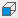
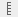

Zooming, Panning and Rotating
There are several methods to zoom, pan, and rotate in McIDAS-V. You can use the
mouse, the arrow keys, a rubber band box, or the Zoom/Pan Toolbar. To reset to
the initial base viewpoint use the key combination Ctrl+R.
Note: You need to click in the Main Display window when using key combinations.
Note: If you are using an Apple Mac with a single button mouse, see Apple Mac One Button Mouse Controls.
|
Zooming
|
Panning
|
Rotating
|
| Mouse |
Shift-Left Mouse Drag: Select a region by pressing
the Shift key and dragging the left mouse button (MB1).
Shift-Right Mouse Drag: Hold Shift key
and drag the right mouse button (MB3). Moving up zooms in, moving down
zooms out. |
Ctrl-Right Mouse Drag: Hold Control key
and drag right mouse to pan. |
Right Mouse Drag: Drag right mouse to rotate. This works for a globe display. |
| Scroll Wheel |
Scroll Wheel-Up: Zoom out.
Scroll Wheel-Down: Zoom in. |
|
Ctrl-Scroll Wheel-Up/Down: Rotate clockwise/counter
clockwise.
Shift-Scroll Wheel-Up/Down: Rotate forward/backward clockwise. |
| Arrow keys |
Shift-Up Arrow: Zoom in.
Shift-Down Arrow: Zoom out. |
Ctrl-Up arrow: Pan down.
Ctrl-Down arrow: Pan up.
Ctrl-Right arrow: Pan left.
Ctrl-Left arrow: Pan right. |
Left/Right Arrow: Rotate around vertical axis.
Up/Down Arrow: Rotate around horizontal axis.
Shift-Left/Right Arrow: Rotate clockwise/counter clockwise. |
The default mouse and keyboard controls can be customized using the User Preferences window's Navigation
Controls tab by selecting Edit->Preferences from
the main menu.
Apple Mac One Button Mouse Controls
Mouse controls are a bit more challenging if you are running McIDAS-V on a Mac
with a single mouse button. The typical left mouse button (MB1) functions are
done with a click of the button. Right mouse options (MB3) are simulated using
the Option key with a mouse click. Use the following:
- Option + click to rotate
- Shift + Option + click to zoom
There is no replacement for the mouse panning actions on the Mac. Use the keyboard
arrow functions or the Viewpoint toolbar instead.
The Viewpoint Toolbar allows you to quickly switch between different viewpoints, change the perspective of the display, and add rotation.
- Rotate to top viewpoint - Rotates the display to a view from the top, looking down along the z-axis.
- Rotate to bottom viewpoint - Rotates the display to a view from the bottom, looking up along the z-axis.
- Rotate to north viewpoint - Rotates the display to a view from the north, looking down along the y-axis.
- Rotate to east viewpoint - Rotates the display to a view form the east, looking left along the x-axis.
-  Rotate to south viewpoint - Rotates the display to a view from the south, looking up along the y-axis.
- Rotate to west viewpoint - Rotates the display to a view from the west, looking right along the x-axis.
- Set parallel/perspective projection - Maintains the selected viewpoint, and adds the more of a perspective of working in a 3D space.
- Rotate to a user specified view - Opens a Viewpoint Settings window, where you can enter numerical values for Azimuth from North and Tilt down from top. This allows you to set a viewpoint without having to navigate through the display to get to it.
-  Set the vertical range - Opens a Vertical Scale window, which allows for setting the vertical scale (height) of the wireframe box in the Main Display window, as well as the units to utilize. This feature is useful when working with a 3D display to either make features stand out more or less. The Vertical Scale window also allows for setting how the vertical scale will appear in the display as far as labeling. For more information on this functionality, see the Vertical Scale tab of the Properties window.
- Auto-rotate - Rotates the display. Right click on this icon to select which direction to rotate the display and to set a speed for the rotation.
The Zoom/Pan Toolbar assists in navigating the 3D space.
- Zoom in - Zooms in on the display, towards the center of the Main Display window.
- Zoom out - Zooms out of the display, away from the center of the Main Display window.
 Rest display projection - Undoes any zoom, translation and rotation done to the display.
Rest display projection - Undoes any zoom, translation and rotation done to the display.- Translate left - Shifts the display to the left.
- Translate right - Shifts the display to the right.
- Translate up - Shifts the display up.
- Translate down - Shifts the display down.
The Viewpoint Undo/Redo buttons allow you to undo/redo any zoom/pan/rotation/projection change made to the display. Note that you can hold down Shift and click these buttons to go forward/back 10 changes at once.
- Undo the viewpoint/projection change - Undoes the last change to zoom level, pan, rotation, or change in projection made to the display.
- Redo the viewpoint/projection change - Redoes the last event that was undone with the Undo the viewpoint/projection change button.